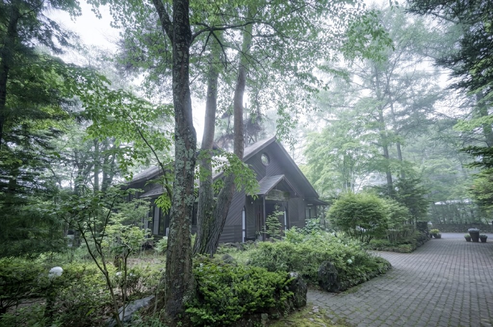

1. お問い合わせ
まずは希望時期や列席人数など、現時点で分かる範囲をお知らせください。日程や会場使用可否を確認いたします。
Church Wedding
木漏れ日があふれる礼拝堂で、お二人の新しい歩みのための豊かな祝福の祈りを捧げます。当教会では、どなたの挙式も真摯にお引き受けいたします。初めて教会式をご検討される方にも、準備から当日まで丁寧にご案内いたします。

Sacred Ceremony
軽井沢追分教会の結婚式は、キリスト教の伝統に則った厳かな礼拝として行われます。聖書のことばに耳を傾け、神さまの前で誓いを交わす時間は、お二人の人生に深い意味を与えてくれます。
挙式ではパイプオルガンの生演奏と讃美を大切にしており、礼拝堂全体が祈りと祝福に包まれます。信者の方に限らず、教会が初めての方でも安心して式を挙げていただけるよう、事前に丁寧なご説明を行います。
Wedding Day Timeline
当日の進行は、礼拝としての静けさと、祝福の喜びの両方を大切にしながら進みます。下記は一般的な流れの一例です。
オルガンの前奏の中、ご家族と会衆に見守られて礼拝堂へ入場します。
聖書の朗読と短いメッセージの後、お二人が誓約のことばを交わします。
互いへの誓いのしるしとして、指輪を交換します。
牧師が結婚の祝福を祈り、会衆全体で新しい歩みを祈り支えます。
退場後、礼拝堂内外での記念撮影とご家族との歓談の時間を持ちます。
Preparation
お申し込みから当日まで、牧師と担当スタッフが伴走しながら準備を進めます。ご希望やご不安は、どの段階でも遠慮なくご相談ください。
まずは希望時期や列席人数など、現時点で分かる範囲をお知らせください。日程や会場使用可否を確認いたします。
牧師との面談を行い、挙式の意味や進行、式文について丁寧に共有します。必要に応じて複数回の打ち合わせを実施します。
式次第・音楽・当日導線を最終確認します。費用についてもこの段階で明確にご案内し、安心して本番を迎えていただきます。